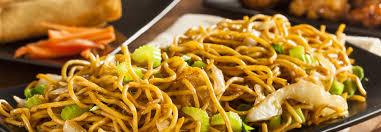

Chinese Fried Noddle (Seafood Chow Mein)

INGREDIENTS
- Hand-pulled noodles (boil to well-done)
- fresh oysters (soak in ice water after being boiled to well-done, then drain)
- fresh shrimp (boil the shrimp to well-done)
- short necked clams (the remaining meat after being boiled to well-done)
- mushroons
- peppers
- gingers
- scallion pieces
- a large tablespoon of garlic lobster sauce
- a large tablespoon of oyster sauce eachcooking wine
- soup stock (soup which is used to boil short necked clams)
- half a bowl of rice
- a little salt
COOKING METHOD
- Heat up the wok with two lager tablespoons of oil.
- Add peppers, gingers and scallion pieces.
- Fry them until the fragrance bursts out.
- Drop oysters, shrimps, clams and mushrooms into the wok.
- Stir-fry them immediately for a fewminutes and then remove from dish.
- Boil half a bowl of soup stock with some salt.
- Put the well-done noodles into the wok and stir-fry them until the soup cooks out.
- Add the seafood back, fry evenly, then the dish is finished.